Gotsu, Shimane: things to do, food and stays
Gotsu · Shimane
Gotsu
Highlighted on the Shimane map.

Stay
旅館ぬしや
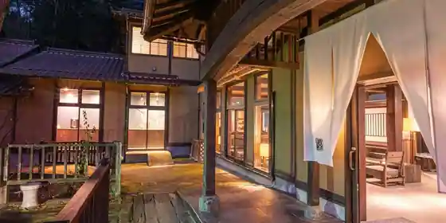
Ryokan Nushiya
Ryokan inn at Arifuku Onsen in Arifukuonsen, Gotsu.
アウルリゾート有福温泉
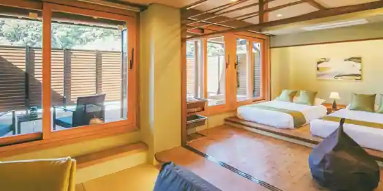
Auru Resort Arifuku Onsen
Resort hotel at Toarifuku Onsen in Arifukuonsen, Gotsu with free-flowing hot spring baths.
KAZENOKUNI IWAMI RESORT&STAYS
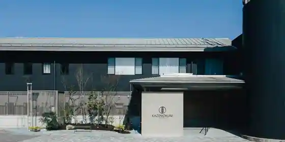
KAZENOKUNI IWAMI RESORT&STAYS
有福家
Arifuku Ie
Inn at Arifuku Onsen in Arifukuonsen, Gotsu.
Showcase Hotel KASANE
Showcase Hotel KASANE
Inn at Arifuku Onsen in Arifukuonsen, Gotsu.
スーパーホテル江津駅前 天然温泉 石州の湯
Super Hotel Gotsu Ekimae Tennen Onsen Sekishu No Yu
Ｙｕｒｕｓａｔｏ
Yurusato
ビジネスホテル サンモール
Business Hotel Sanmoru
Hotel in Tsunozu, Gotsu with business travelers.
フェリース有福温泉
Ferisu Arifuku Onsen
Inn at Suarifuku Onsen in Arifukuonsen, Gotsu.
三階旅館
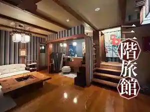
Sankai Ryokan
Ryokan inn at Gotsushiyufuku Onsen in Arifukuonsen, Gotsu.
有福温泉 よしだや-自家源泉かけ流しの宿-
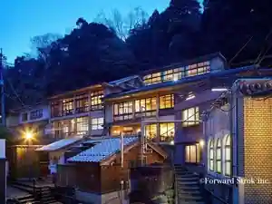
Arifuku Onsen Yoshidaya - Jika Gensen Kake Nagashi No Yado
Inn at Arifuku Onsen in Arifukuonsen, Gotsu with free-flowing hot spring baths.
有福の宿こととき－和－
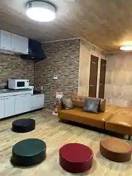
Arifuku No Yado Kototoki - Wa
Inn at Gotsushiyufuku Onsen in Arifukuonsen, Gotsu with family-friendly stays.
Dining
栄寿し
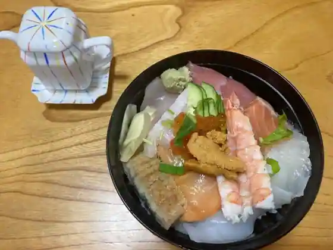
Eiju Shi
道の駅 サンピコごうつ
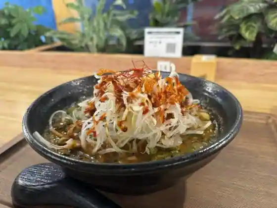
Michi No Eki Sanpiko Gotsu
ぬしや
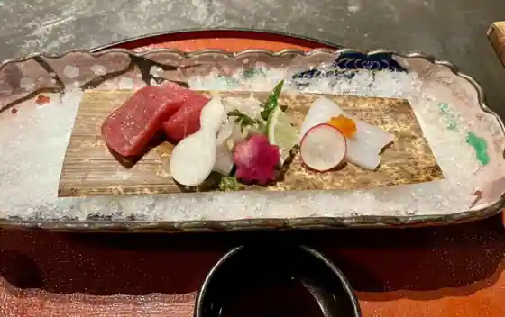
Nushiya
旨いとんかつ 糸吉 江津店
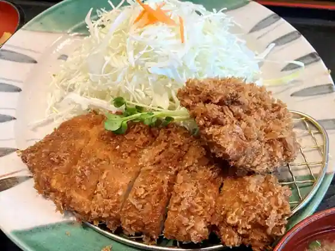
Umai Tonkatsu Ito Kichi Gotsu
道
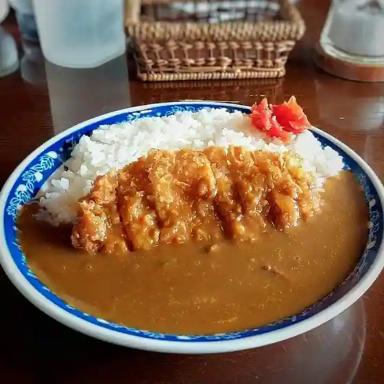
Michi
有福BIANCO
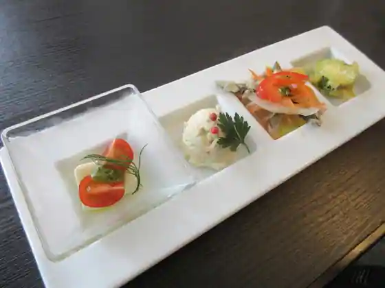
Arifuku BIANCO
なぎの木KITCHEN
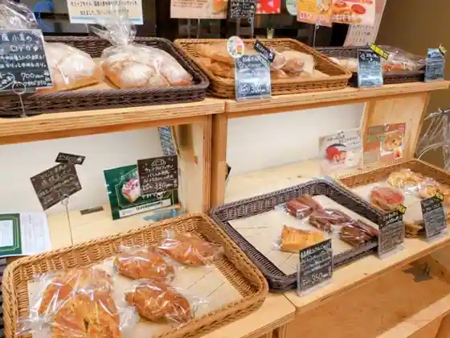
Nagino Ki KITCHEN
かわさきや
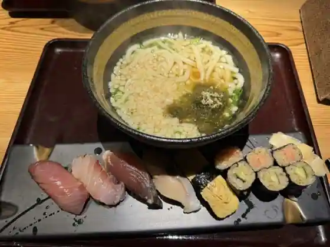
Kawasakiya
たぬきの国
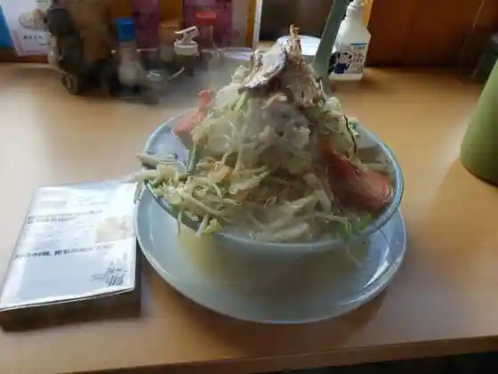
Tanukino Kuni
風の国
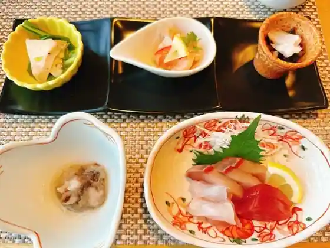
Kaze No Kuni
八百山
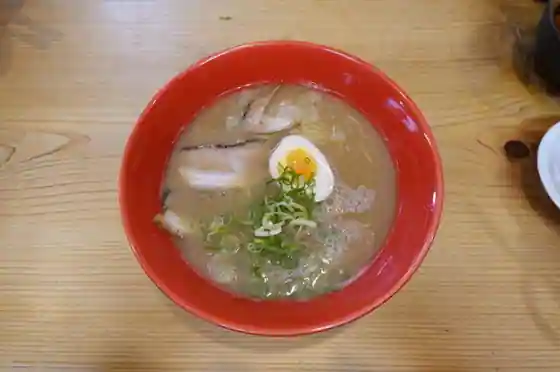
Happyaku Yama
カフェ 桜コ..
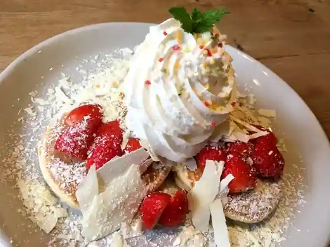
Cafe Sakura Ko..
風のえんがわ
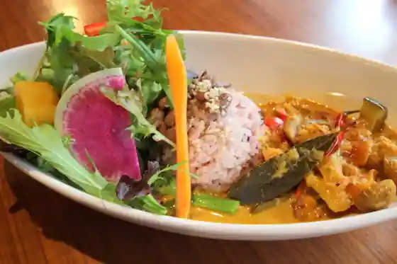
Kaze Noengawa
ディナー
Dina
阿じ与志
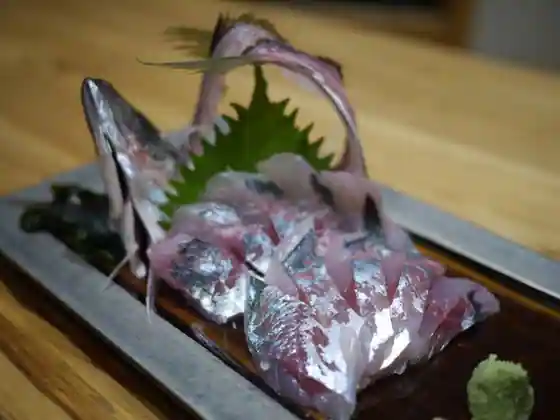
A Ji Yoshi
一心
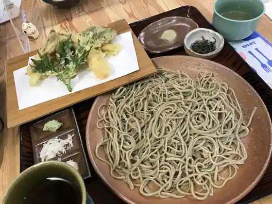
Isshin
レストラン 異瑠香
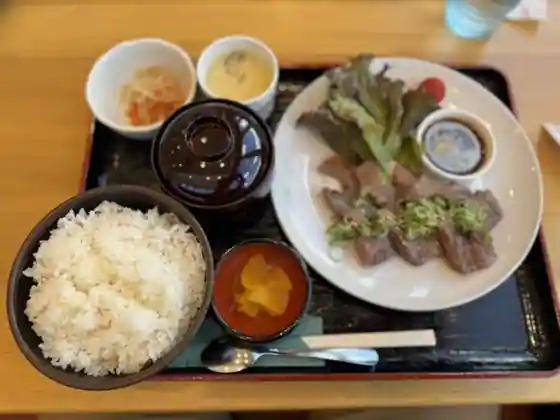
Restaurant I Ru Kaori
喜楽
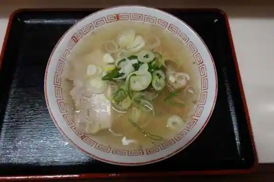
Kiraku
やま茶家
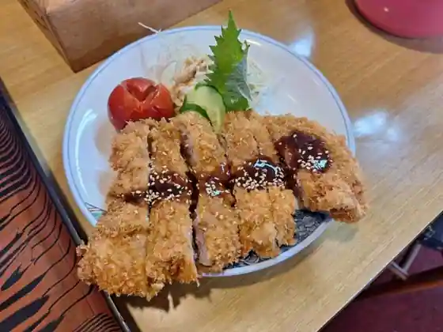
Yama Chake
パレス和光
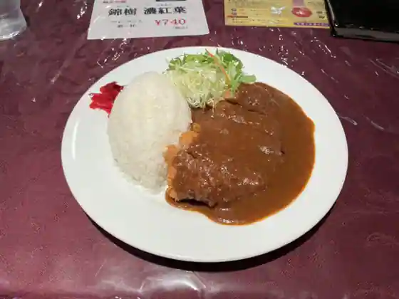
Paresu Wako
蔵庭
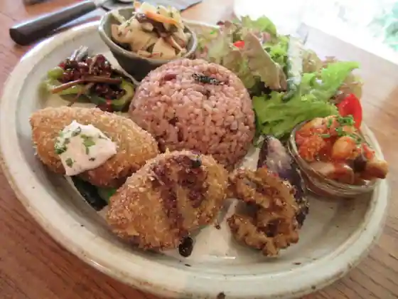
Kura Niwa
森のレストラン
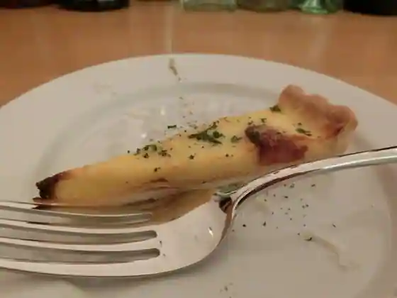
Mori No Restaurant
住京蒲鉾 道の駅店
Ju Kyo Kamaboko Michi No Eki
Sights
Sekishu Kawara

Omae Yu

Nagi no Ki Terasu (Kyushin Raku Village Mai no City)

KAZENOKUNI IWAMI RESORT&STAYS (Kaze no Kuni)

Arifuku Onsen
Takashi Kawa Manju
Roadside Station Sanpiko Gotsu
Ko no Kawa Matsuri
Gotsu Higashi Uindo Farm Furyokuhatsuden Tokoro
Kaze no Kuni Onsen
Namiko Beach
Ko no Kawa
Iwami Osaki Hana Lighthouse
Akuasu Hasshii Plaza Iwami Kagura Teiki Koen
Arifuku Onsen Yayoi Yu
Yamabe Shrine
Arifuku Onsen Yu no Town Kaguraden Iwami Kagura Teiki Koen
Iwami Biiru
Satsuki Yu
Shima no Hoshiyama Tsubaki Village
Zentaro Mochi Main Shop
Ta Hato Shrine
Kojo Yama Lookout
Gotsu Hon Town Bo Kaido
Iwa Taki Tera Falls
Komo Sawa Koen Oto Campground
Ra Guran Monte
Iwami Kagura Gekijo Mai no Za Iwami Kagura Teiki Koen
Imai Art Museum
Komo Sawa Park
Sekishu Shimada Kama
Gohan Ie Oe
Kaze no Engawa
Ryokan Nushiya
Shimane Prefectural Shonen Nature no Ie
Bon Bon Kitchen
Pukupuku Do
Kuromatsu Beach
Kannon Taki
Nami Seki Dam
Sekishu Katsuji Hanshi (Kaze no Workshop)
Asari Beach
Chiiki Koryu Bussan Kan Omiyage Mori Topia
Gotsu Iwami Kagura Taikai
Omoto Kagura Densho Kan
Gotsu Ekimae Paretto Gotsu Iwami Kagura Teiki Koen
Tsunozu Kakimoto Jinja Kahi to Hitomaro no Matsu
Umai Tonkatsu Ito Kichi
Sakurae Cherry Blossoms
Sekishu Miyauchi Kama
Kagura Isho Ohata Ya
Arifuku Great Buddha
VOGA Watch Museum & Cafe
Arifuku Yoshidaya
Ogawa Ie Sesshu Garden
Arifuku BIANCO
Sakurae Soba Isshin
cafe Sakura co..
Pan Kobo Komugi
Sato Kawa Kyoryo
TRATTORIA Kitsutsuki
Wakahiroya
Yamamoto no Shiro Shidarezakura
Ichiban Kan
Tsubaki Festival
toi toi toi
Resutoran I Ru Kaori
Yakiniku Horumon Kyoei
Kashibesso Kasa Mare
Kahi Meguri
Sakurae Bridge
Hachinohe Dam
Sakurae Kagura Kyoen Taikai
Rentasaikuru (Gotsu Kankojoho Center)
Paretto Gotsu Iwami Kagura Tokubetsu Koen Daikansha Di !
Gotsu Kanko Boranteiagaido no Kai
Paresu Wako
Hatago Ie Oe
Guest House Nami no Oto /c-space Tora no Ana
Bijinesu Hotel Sanmoru
Gotsu Yakusho